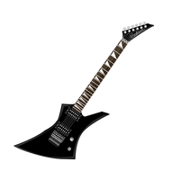
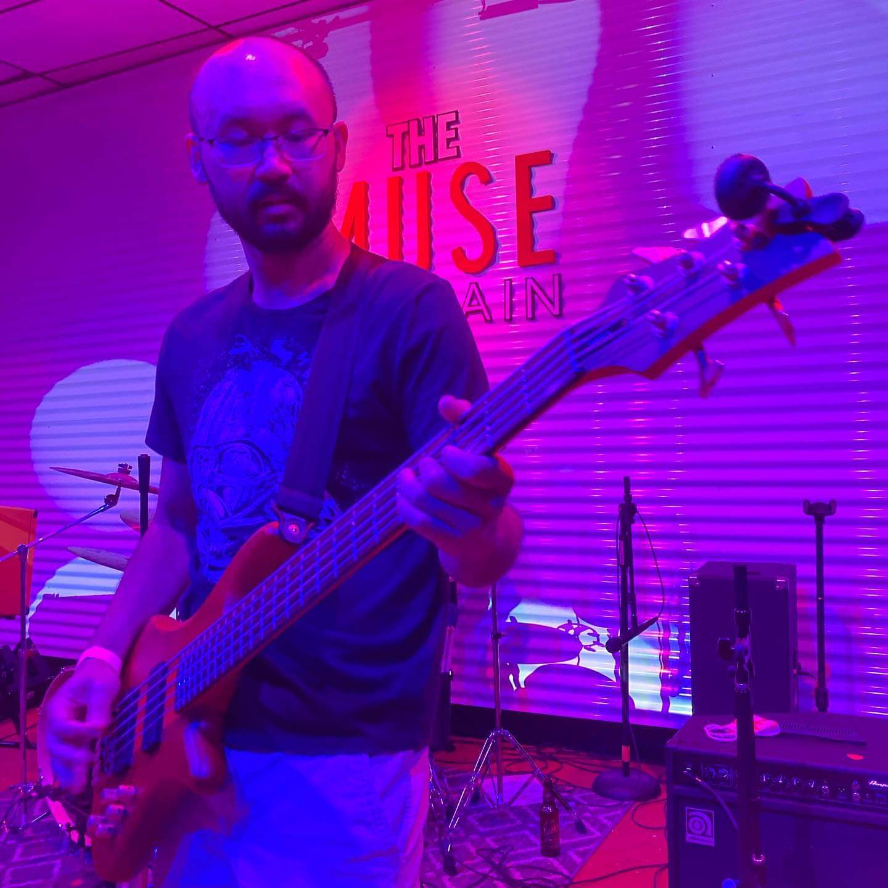
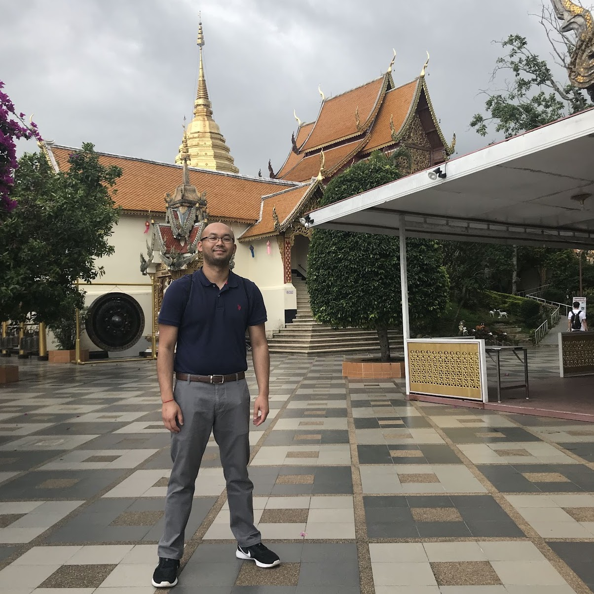

Carroll High School (2006-2010)
Core 40 Academic Honors

Universidad Complutense de Madrid (2012-2013)
Academic Year Study Abroad
Indiana University Bloomington (2010-2015)
B.S. in Education, Graduated with Distinction
Excellon Motors (2018 - present)
CNC Programmer and Machinist
- Interpreted GE drawings, used trigonometry and geometry knowledge to write programs for CNC machines with G code
- Operated HAAS ST20-Y, ST35, VF-4, Mori Seiki SL-15 lathe to machine castings and bar stock
- Responsible for monitoring inventory and kanban to ensure the availability of parts during assembly process

Private Music Instructor (2015 - present)
Guitar and Baritone
- Transcribed music of all genres and instructed students how to play their favorite songs while incorporating crucial guitar techniques and music theory concepts
- Prepared and instructed students on how to perform their school's concert band music while focusing on music-reading fundamentals such as pitch, rhythm, dynamics, time signatures, etc.
Carroll High School (2015-2018)
Spanish 1 & 2 Teacher/Level 1 Team Leader
- Spanish 1 team leader responsible for curriculum pacing and creating skills-based assessments
- Member of district’s Curriculum Alignment and Assessment Team to ensure vertical and horizontal alignment of World Languages Department
- Served as mentor for new teachers in the district by helping them acclimate to the school and district’s climate
- Involved in extra curriculars such as Carroll Show Choirs as a professional instrumenalist and also served as sponsor of the Guitar Club and Spanish Club
Private Language Tutor (2014-2015)
Spanish/English
- Created materials and explained grammatical concepts to help struggling students improve their understanding and skills in the target language
- Served as a conversation partner to practice language output and comprehension while discussing cultural concepts and colloquial expressions

Music
Proficient at guitar and bass (playing 18 years)

Travel
Doi Suthep in Chiang Mai, Thailand pictured
Art
Drawing in Photoshop and Affinity Photo